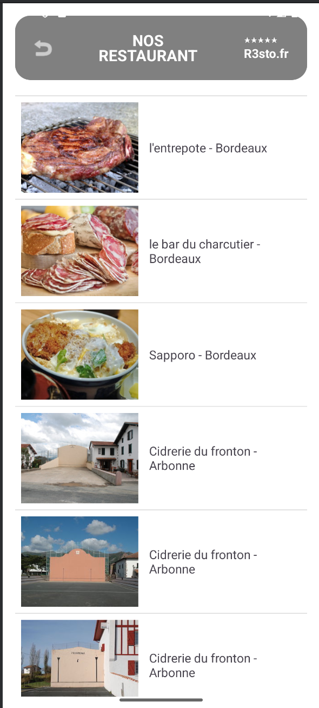

Un aperçu complet de la réalisation du projet

Application mobile de réservation et consultation de restaurants développée en équipe avec architecture MVC, API REST PHP et gestion GitLab en méthode agile.
Cette application Android mobile est le prolongement du site web R3st0.fr. Elle permet aux utilisateurs de consulter la liste des restaurants, visualiser leurs fiches détaillées (photos, avis, notes, horaires, adresse) et préparer de futures réservations directement depuis leur smartphone.
Traiter des demandes concernant les applications : Traitement des tickets de développement, ajout de fonctionnalités selon les besoins exprimés (fiche détail, affichage critiques). Utilisation d'un outil de gestion de tickets (GitLab Issues). Communication écrite et orale adaptée. Compte-rendu des actions réalisées dans les rapports d'itération.
Analyser les objectifs et modalités d'organisation : Analyse du cahier des charges, définition de l'architecture MVC, conception du diagramme UML, planification des itérations. L'organisation projet est explicitée. Les objectifs du projet sont explicités. L'analyse du besoin et de l'existant est pertinente. Planifier les activités : Organisation en sprints, daily scrums, répartition des tâches en tickets GitLab, gestion du backlog et des priorités. Les activités personnelles sont planifiées de façon formelle, l'avancée est documentée. Le projet est documenté et les livrables sont conformes.
Diagramme UML MVC, création de l'API REST PHP, maquettes Canva de l'application.
PDF Itération 1Développement de la vue détaillée, connexion API, affichage des critiques et notes moyennes.
PDF Itération 2Implémentation du détail restaurant, du parcours de réservation, de la table reservation et des API CRUD.
PDF Itération 3Code source complet, branches par itération, commits détaillés.
GitLab